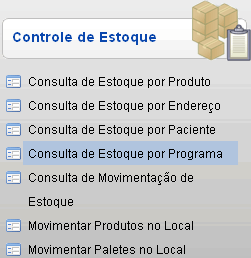
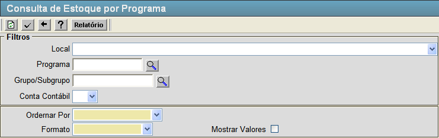
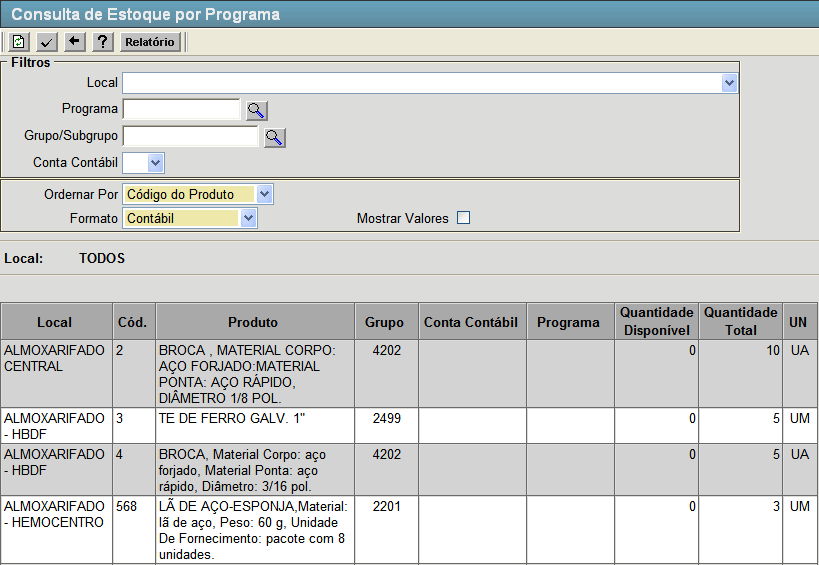

Consulta de Estoque por Programa [ Voltar ]Esta tela permite o usuário consultar a quantidade
de produtos existentes em estoque de um determinado programa. Para acessá-la clique no link "Consulta de Estoque por Programa" dentro do menu "Estoque - Controle de Estoque".  O sistema abrirá a seguinte tela:  Para verificar a situação dos produtos no estoque referenciados por seus programas, siga os passos a seguir: 1º Passo: preencha os filtros da pesquisa. Lembre-se que campos em amarelo são de preenchimento obrigatório.
2º Passo: após preencher os filtros desejados clique no botão  para gerar a consulta. Os resultados irão aparecer na tela conforme imagem abaixo. para gerar a consulta. Os resultados irão aparecer na tela conforme imagem abaixo. 3º Passo (Opcional): clique no botão  [Relatório].
Este botão abrirá o relatório "ESTOQUE POR PROGRAMA", que contém os resultados da pesquisa. [Relatório].
Este botão abrirá o relatório "ESTOQUE POR PROGRAMA", que contém os resultados da pesquisa. |
 [Pesquisar] para selecioná-lo por meio de uma listagem contendo todos os programas cadastrados.
[Pesquisar] para selecioná-lo por meio de uma listagem contendo todos os programas cadastrados.